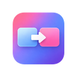
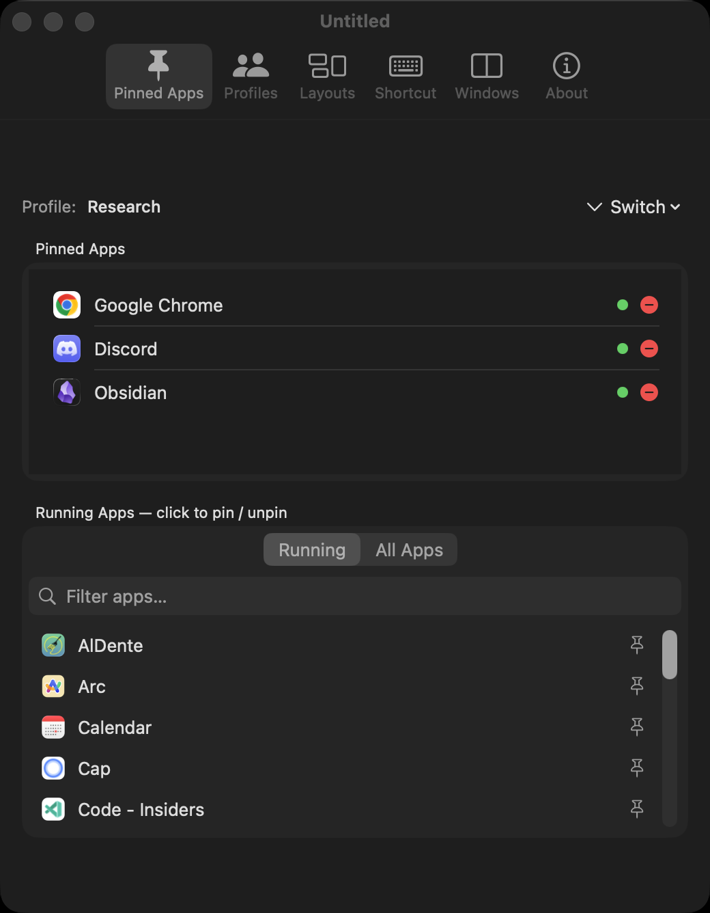
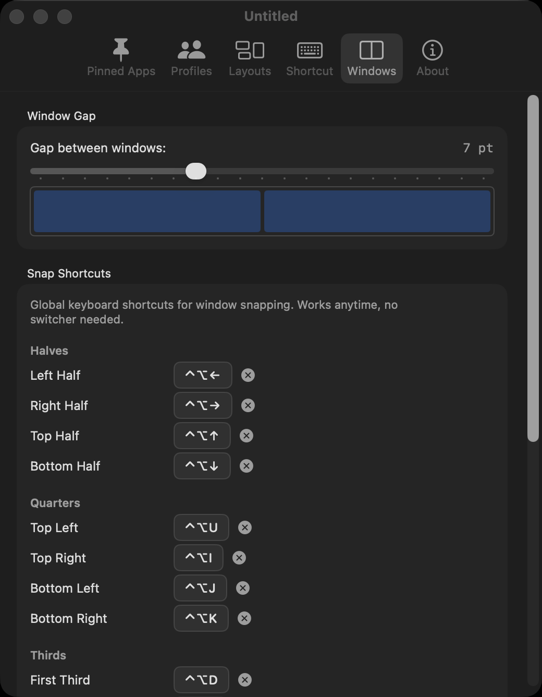
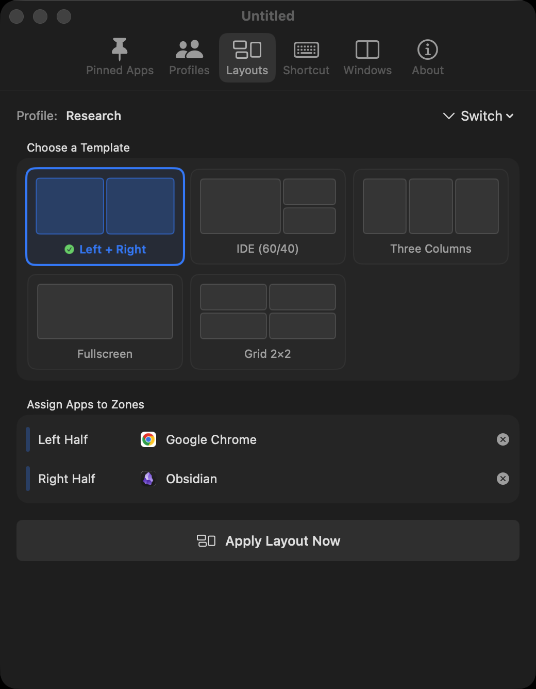
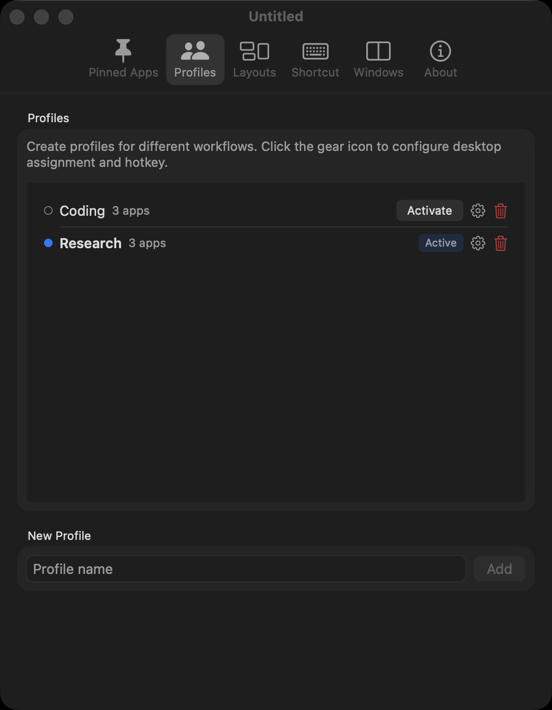
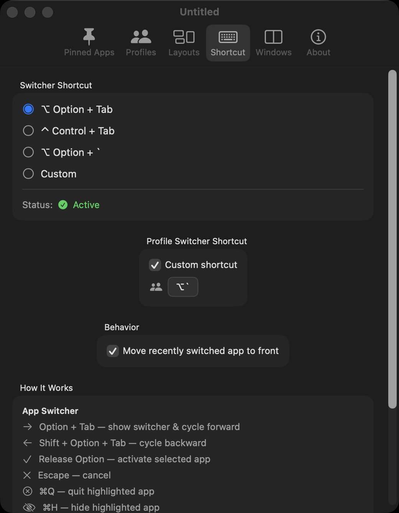

Option+Tab to cycle through pinned apps. Release to switch.

HopTabPin apps. Snap windows to halves, thirds, quarters. Switch profiles per desktop. Save and restore sessions. All from keyboard shortcuts.
Pin only the apps you care about. Press Option+Tab to cycle through your pinned list — not the 20 random apps macOS shows. Release to switch, Escape to cancel.
Click to switch works too. Cmd+Q/H/M while the switcher is open to quit, hide, or minimize the highlighted app.

Global keyboard shortcuts snap any window to halves, thirds, quarters, or fullscreen. Works anytime — no switcher needed.
Press the same direction again to cycle sizes: ½ → ⅓ → ⅔. Undo any snap with one shortcut. Configurable gaps between windows.

Five built-in layouts: 50/50 split, IDE 60/40, three columns, 2×2 grid, and fullscreen. Assign apps to zones and apply with one click.
Works with stubborn apps — Chrome, Zed, Wezterm, Electron. Multi-retry positioning with dual strategies for GPU-rendered windows.

Create profiles for different workflows — Coding, Design, Research. Each profile has its own pinned apps, layout, hotkey, and sticky note.
Assign profiles to macOS Spaces. Swipe between desktops and HopTab auto-switches the active profile. Save and restore full window sessions per profile.

Every shortcut is configurable. The app switcher hotkey, profile switcher, all 17 snap directions, per-profile hotkeys — record whatever combo you want.
Supports Option, Control, Command, and any key. HyperKey compatible. Strict modifier matching prevents conflicts.

You open your laptop, swipe to Desktop 2. HopTab auto-switches to your "Coding" profile. Your pinned apps — Zed, Wezterm, Chrome, TablePlus — are ready. You press one button and all four snap into an IDE layout: editor 60% left, terminal top-right, browser bottom-right. You're coding in under 5 seconds.
You're comparing three sources. Snap Chrome to the left third, Notion to the center third, Obsidian to the right third. Switch to a doc — ⌥+Tab jumps to Notion instantly. Need to check Slack? It's not pinned, so it stays out of your way. When you're done, save the session — tomorrow you restore everything exactly as it was.
Figma on the external display, Xcode on the laptop. You're comparing the design to your implementation. Snap Figma to full on monitor 2, Xcode left-half on monitor 1, Simulator right-half. Need to move a window? ⌃⌥⌘+→ throws it to the other display. The window keeps its proportional position automatically.
You're deep in code. A Slack DM pulls you into a support thread. You press your "Support" profile hotkey — HopTab saves your coding session, switches to the Support profile (Slack, Zendesk, Chrome), and applies its layout. You handle the ticket. Press the "Coding" hotkey — your editor, terminal, and browser restore to exactly where you left off. No dragging, no resizing, no lost context.
Multi-window apps show a picker. Arrow keys to navigate, Enter to select. Minimized windows included.
Throw windows to the next display with Ctrl+Opt+Cmd+Arrow. Proportional placement across screen sizes.
Save every window's position, size, and z-order per profile. Restore it tomorrow exactly as you left it.
Every snap saves the previous position. Ctrl+Opt+Z restores it. Mistake-proof window management.
Minimized apps are automatically restored when activated through HopTab. No fishing in the Dock.
0–20pt gaps between snapped windows and screen edges. Shared borders get half-gaps automatically.
Checks every 4 hours. Shows a banner in the menu bar when a new version is available.
Attach a note to each profile. Shown briefly when switching — remind yourself what each workspace is for.
Lives in the menu bar. No Dock icon. Settings, profiles, and status all accessible from the dropdown.
| Action | Shortcut |
|---|---|
| App Switcher | |
| Open & cycle forward | ⌥ + Tab |
| Cycle backward | ⇧ + ⌥ + Tab |
| Activate selected | Release ⌥ |
| Cancel | Esc |
| While Switcher Open | |
| Snap left / right / top / bottom | ← → ↑ ↓ |
| Quit / Hide / Minimize | ⌘+Q / ⌘+H / ⌘+M |
| Global Window Tiling | |
| Halves (left / right / top / bottom) | ⌃⌥ + ←→↑↓ |
| Quarters (TL / TR / BL / BR) | ⌃⌥ + UIJK |
| Thirds (first / center / last) | ⌃⌥ + DFG |
| Two-thirds (first / last) | ⌃⌥ + ET |
| Maximize / Center | ⌃⌥ + ⏎ / ⌃⌥ + C |
| Undo snap | ⌃⌥ + Z |
| Monitors | |
| Next / Previous monitor | ⌃⌥⌘ + → / ← |
| Profiles | |
| Switch profile | ⌥ + ` |
Or download from GitHub Releases
System Settings → Privacy → Accessibility → enable HopTab
Pin some apps, set up profiles, start tiling